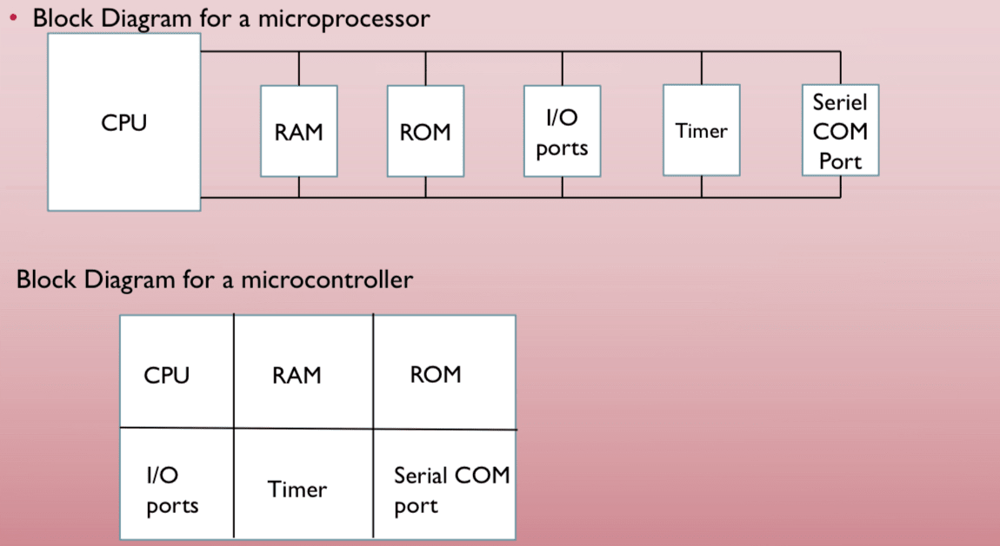

INTRODUCTION TO MICROPROCESSORS
By Isaiah Chiraira
What is a Microprocessors?
- A microprocessor is the central unit of a computer system that performs arithmetic and logic operations, which generally includes adding, subtracting, transferring numbers from one area to another, and comparing two numbers.
- It is the heart of any computing system.
- It is often known simply as a processor, a central processing unit, or as a logic chip.
- The computing system can be a pc, calculator, remote control, smart TV, iPhone,
- The computing system can be an Embedded System.
- An embedded system is controlled by its own internal microprocessor without any external processor.
- The microprocessor in an embedded system is burned with a single purpose for single specific function needed for the system. For instance, the processor in a printer only getts data and prints it as opposed to the M1 chip in apple's MacBooks and iPad that has many functions like word processing, games, and internet connectivity.
Microprocessor VS Microcontroller
- A Microcontroller comes with the CPU, RAM, ROM, I/O, Timers, Serial COM port under one chip
- A microprocessor contains no RAM, no ROM, and no I/O ports on the chip itself- just a stand alone CPU. The system designer using the microprocessor has to add those.
- You can think of it in the same way as a customisable gaming pc
- Microcontrollers are relatively cheaper, lower power consuming than microprocessors
- It is important to note that, microprocessors and microcontrollers do the same thing
- In this course, we will use a microcontroller.
The following diagram shows the overview of a microprocessor and a microcontroller.
Factors to consider when choosing a microcontroller
- Speed - What is the max Speed that the microcontroller can support.
- Power consumption - How much the power consumed for performing a task.
- Amount of RAM and ROM on the chip
- Cost
This feels like buying a phone or a laptop.
The AVR Microcontroller Family
- Developed in 1996 by Alf-Egil Bogen and Vergard Wollen.
- Stands for Advanced Virtual RISC though some say it's Alf Vegard RISC.
- RISC stands for Reduced Instruction Set Computing.
- There are many mebers of the AVR family
- All of the members except the AVR32, are 8-bit microcontoller, meaning that they can process only 8 bits of data at a time. Larger data have to be broken into smaller chunks before they can be processed.
- Members can be broken into four classes;
- Mega
- Tiny
- Special Purpose
- Classic
- We will work with the Mega for this course.